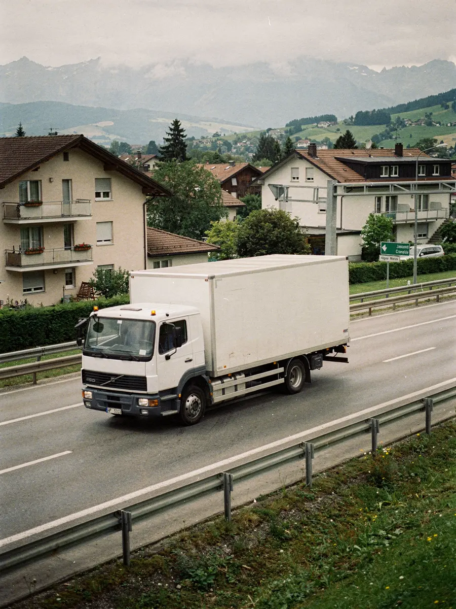

Umzug von der Schweiz nach Europa
Ein Umzug ins Ausland braucht mehr Vorlauf als ein Umzug innerhalb der Schweiz. ZÜGELKLAR plant Umzüge ins Ausland vor allem innerhalb Europas und in die Nachbarländer der Schweiz – individuell und mit einem festen Ansprechpartner für Abholung, Transport und Lieferung.

SymbolbildWie wir einen Umzug ins Ausland planen
Zielort, Menge des Umzugsguts, Zugänge an beiden Adressen und der gewünschte Zeitrahmen bestimmen den Ablauf. Deshalb werden Route, Zeitfenster und Leistungsumfang vorab mit Ihnen festgelegt und in der Offerte festgehalten.
Umzüge ins Ausland bieten wir auf Anfrage an. Melden Sie sich früh, damit genügend Zeit für Planung und Unterlagen bleibt.
Ein fester Ansprechpartner begleitet Ihren Umzug ins Ausland von der ersten Anfrage bis zur Lieferung am Zielort. Abholung, Transport und Ankunft stimmen Sie mit einer Stelle ab. Ändert sich etwas an Ihrem Zeitplan, etwa beim Übergabetermin der neuen Wohnung, koordinieren wir das.
Zoll und Unterlagen
Beim Umzug über die Schweizer Grenze gehören Formalitäten dazu. Welche Unterlagen nötig sind, hängt vom Zielland und Ihrer persönlichen Situation ab. Welche Zollunterlagen Sie brauchen, besprechen wir vor der Offerte.
In der Offerte steht, was enthalten ist und was nicht – etwa Gebühren, Maut oder allfälliger Zollaufwand.
Was den Preis bestimmt
- Volumen bzw. Zimmerzahl
- Stockwerk und Lift an Abhol- und Zieladresse
- Trageweg an beiden Adressen
- Distanz und Route zum Zielort
- Zusatzleistungen wie Packen, Demontage oder Reinigung der alten Wohnung
Sie erhalten einen Festpreis oder Stundenpreis schriftlich, bevor Sie zusagen. Mehr dazu im Ratgeber Was beeinflusst die Kosten eines Umzugs?
Das brauchen wir für die Offerte
Fotos und ein kurzes Video per WhatsApp an 079 933 31 11 sind ein guter Anfang.
Auch für Auslandumzüge können Sie Umzugskartons und Schutzmaterial mieten oder den Ein- und Auspackservice buchen. Gerade bei längeren Strecken ist eine transportsichere Verpackung besonders wichtig.
- Abhol- und Zieladresse mit Stockwerk und Lift
- ungefähres Volumen bzw. Zimmerzahl
- besonders schwere, empfindliche oder wertvolle Gegenstände
- gewünschter Zeitraum für Abholung und Lieferung
- Zusatzleistungen wie Packen, Demontage oder Reinigung der alten Wohnung
Die Schweizer Seite gleich mitorganisiert
Wer ins Ausland zieht, gibt meist auch eine Wohnung in der Schweiz ab. Die Umzugsreinigung mit Abnahmegarantie, eine Räumung von Keller oder Estrich und die Demontage der Möbel lassen sich mit dem internationalen Umzug kombinieren.
So haben Sie auch für die Abreise einen Ansprechpartner. Bei internationalen Aufträgen kann eine Voraus- oder Teilzahlung vereinbart werden; die Bedingungen stehen in der Offerte.
Häufige Fragen
In welche Länder zieht ZÜGELKLAR um?
Vor allem innerhalb Europas und in die Nachbarländer der Schweiz. Ob ein bestimmtes Ziel möglich ist, klären wir bei Ihrer Anfrage.
Wie lange im Voraus sollte ich einen Auslandumzug planen?
Möglichst frühzeitig. Planung, Route und Unterlagen brauchen mehr Vorlauf als ein Umzug innerhalb der Schweiz.
Können Verzögerungen an der Grenze entstehen?
Ja, Grenz- und Zollabfertigung liegen ausserhalb unseres Einflussbereichs. Deshalb planen wir Zeitfenster realistisch und informieren Sie bei Verzögerungen so rasch wie möglich.